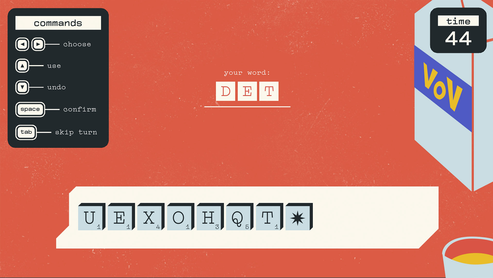
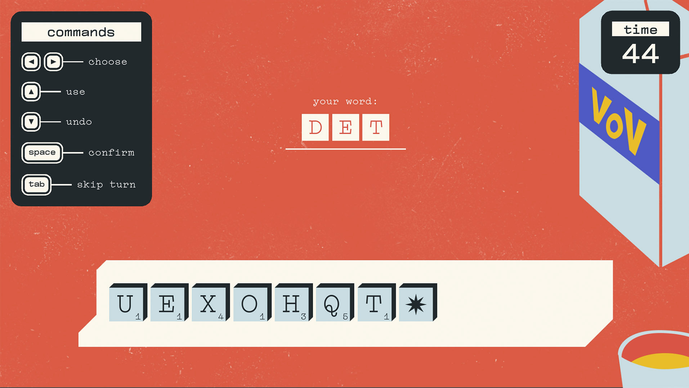

{ game art, game development }
Gincana
In the summer of 2022 I started working on a solo project, a video game inspired by the classic
Commodore 64 skiing game Slalom, by HAL Labs.
I developed the game with Godot Engine in my spare time, and I was joined by
Alessandro Ferrari, who composed and
produced Gincana's original soundtrack.
Gincana was released to be the first project of our video game collective, Villadelfina, and is
available for free on Itch.io.
▶ What I did
I thought of the game concept and the art direction of the game, I created the visual assets for the game and for the promotional content and I took care of the development.
Developed in 2022/23.
 
